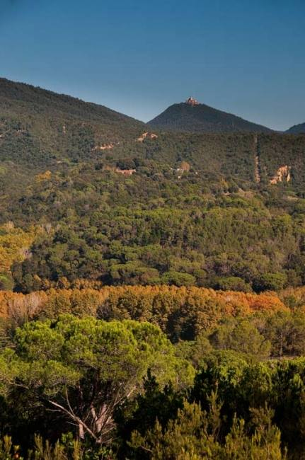

Ruta · Gualba
Una bona manera de conèixer el poble i els seus voltants, és guanyar altura i aconseguir vistes. Si no pugem cap cim, els camins de carena són la millor alternativa. Aquesta volta fàcil (cal un…